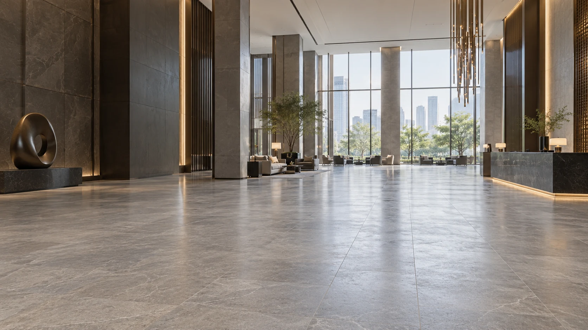

미끄럼방지 적용공간
식당부터 욕실까지.
매일 걷는 바닥을 더 안전하게.
물기가 반복되는 곳, 사람이 많이 오가는 곳.
미끄러운 구역부터 필요한 만큼 시공하세요.

식당·주방
바쁜 주방에,
덜 미끄러운 작업 동선.
조리대 앞부터 배식 통로까지. 물기와 기름이 생기는 구역을 살피고, 영업 일정에 맞춰 시공해요.

호텔·수영시설
물이 마를 틈 없는 곳도.
미끄럼방지가 필요해요.
맨발로 걷는 수영장 주변과 샤워실. 실제 이용 방식에 맞춰 샘플을 확인하고 작업 구역을 정해요.

관공서·기업·상업시설
비 오는 날의 출입구.
사람이 몰리는 로비.
빗물과 젖은 신발이 지나가는 길을 먼저 살펴요. 운영 중인 시설도 구역과 일정을 나눠 협의할 수 있어요.

유치원·요양원·복지시설
아이와 어르신이 걷는 곳.
바닥부터 세심하게.
손을 씻는 곳, 목욕을 돕는 곳, 이동이 반복되는 통로. 이용자와 돌봄 직원의 동선을 함께 살펴요.

가정 욕실
욕실 한 곳도,
타일 철거 없이.
샤워 공간과 욕조 앞, 세면대 주변. 작은 구역에서 미끄럼 변화와 외관을 확인한 뒤 결정하세요.